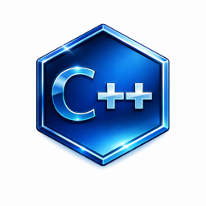
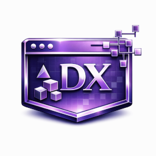

Skills

C++
ゲームロジック / システム構築の中心。安定した仕組みづくりが得意。

DXLib
2D/3D 表示、ゲーム基盤の実装。低レイヤー寄りの開発経験。
Unity（C#）
グリッド管理、自動生成、チーム制作での実装経験。
Core Skills（詳細）
C++
ゲームロジックや基盤部分を構造から組み立てる際の中心言語。 メモリ管理・データ構造・制御フローを意識した低レイヤー寄りの実装が得意で、 破綻しない構造と理解しやすいロジックを重視しています。 DXLib や DirectX9 を用いた低レイヤー実装に加え、 Tiled Editor との連携や tileson を用いたマップデータのパースなど、 既存の仕組みを柔軟に組み合わせて開発を進めています。 また、自作ツール（SpriteTool）を開発し、アセット作成やワークフローの効率化も行っています。
DXLib
C++ による比較的低レイヤーの実装経験として使用。 描画・入力・更新などゲームループの基盤を自前で構築し、 挙動の安定性を意識した実装を行っています。
Unity（C#）
グリッド管理や自動生成など、仕組みづくり寄りの実装を担当。 データ駆動やエディタ拡張など、ゲーム体験を支えるロジック部分を中心に扱います。
Supporting Skills
- スクリプト言語（JS / Shell / VBA） — 調査・試作・ツール作成など、補助的な用途で活用。
- Git / GitHub — 個人制作・チーム制作でのバージョン管理に使用。
Foundational Knowledge
- クラサバ型システム・データベース・ソケット通信 — ゲーム内通信や同期処理の理解に活かせる基礎知識。
- バッチ処理 / 大規模データ処理・基盤設計 — 安定性・堅牢性を意識した設計経験として応用可能。
Experience Years
| 技術 | 実務経験 | 総経験（趣味・学業含む） |
|---|---|---|
| C++ | 4年 | 約12年 |
| DXLib | - | 約4年 |
| Unity（C#） | - | 約2年 |
| Git / GitHub | - | 約2年 |
| JS / Shell / VBA | 7年 | 約15年 |